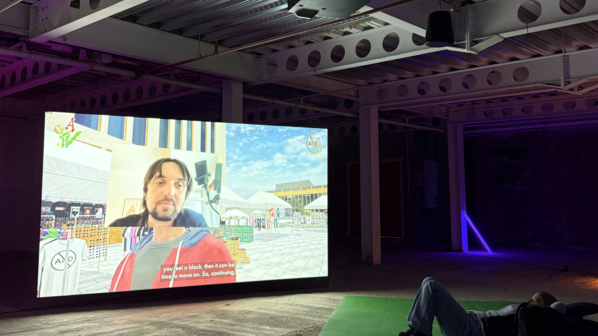
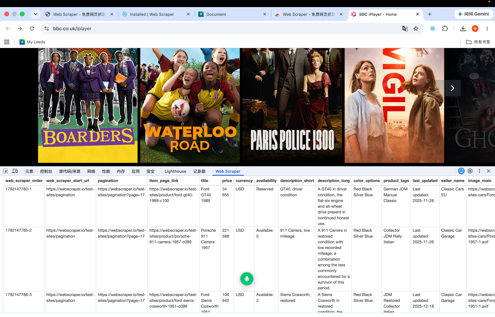
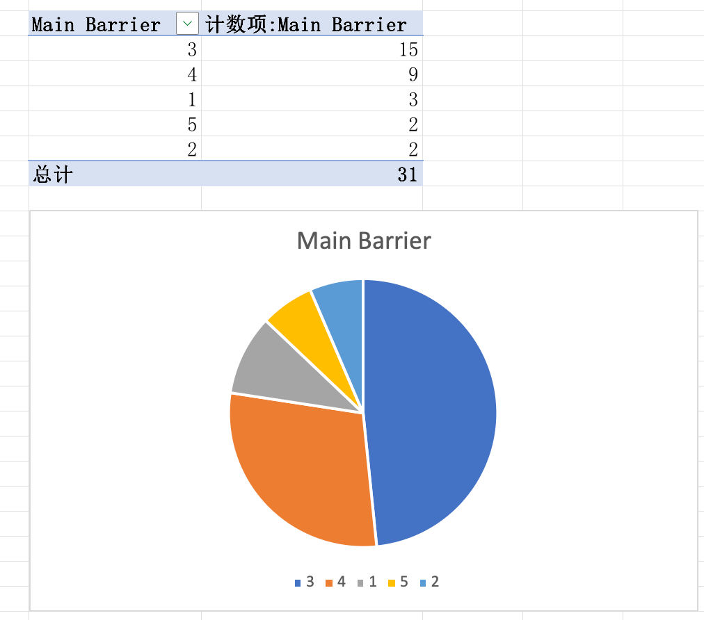

Barnsley
Joined the AND Festival in Barnsley—an incredible showcase of digital interactive art. A memorable day filled with creative media, thoughtful installations, and visual inspiration.
Hi, I'm Eliora. A Product and Interaction Design graduate, now exploring Digital Media Technology in Leeds. This is my digital space to record my UK journey, travel photography, and academic coursework.

Joined the AND Festival in Barnsley—an incredible showcase of digital interactive art. A memorable day filled with creative media, thoughtful installations, and visual inspiration.
A day at the place many people associate with Mr Darcy and Pemberley. A few photos, beautiful scenery, and impressions from my visit.
A hands-on digital media workshop project exploring web structure deconstruction, sitemap configuration, and automated data harvesting.

Successfully configured selectors using the Web Scraper browser extension to harvest structured content from the target web page, exported as a clean CSV dataset.
A space to document my learning journey, track my weekly progress, and reflect on course feedback.
This week introduced us to digital practices and the relationship between technology and society. Instead of viewing technology in isolation, I learned to think critically about how digital media both shapes and is shaped by our social context. It’s a great starting point for exploring digital media technology through both theory and practical work this semester.
This week focused on website structures, HTML/CSS basics, and publishing models. Coming from a background in App UI design, trying out CampusPress and GitHub for web creation was a completely new and challenging experience, but I will keep learning by combining AI and classroom tutorials. I ultimately chose GitHub to build my portfolio. Through this process, I also realized that I need to be more rigorous with my visual and textual layout details, and I will continue to explore and refine them.
This week, we explored the basics of web scraping, learning how to transform unstructured web content into structured, analyzable data (in CSV format) using pre-made tools such as browser extensions. During the practical workshop, I experienced the entire process of harvesting web data using the Web Scraper extension and successfully integrated the dataset and visual results into my personal portfolio. However, I also found that writing custom Python scripts for web scraping can be quite challenging and time-consuming, as it involves dealing with complex libraries and environmental setups. Therefore, I chose to gain a fundamental understanding of Python-based scraping without planning to dive deeply into it right now. By comparison, utilizing existing visual tools to understand the underlying data structures of digital media proved to be much more efficient and intuitive for me.
During the process of collecting and analyzing Reddit data using Communalytic, our team experienced a "sense of intrusion" regarding user privacy. Students posting about topics such as "AI cheating anxiety," "fear of academic misconduct," or "exam stress" shared their experiences under the expectation of anonymous community support, rather than anticipating becoming research subjects. To resolve this ethical dilemma while adhering to data protection and research standards, we implemented strategies of "De-identification" and "Qualitative-to-Quantitative Mapping": 1.Stripping Personal Identifiers: We completely removed all user IDs, exact timestamps, and direct URLs. 2.Converting Text to Numeric Data: By applying our 5-variable encoding dictionary, we transformed subjective, personal narrative posts into objective numeric codes (e.g., 1, 1, 3, 3, 1). This aggregated individual private experiences into broader, anonymized behavioral patterns. This reflection highlighted that data analysis goes beyond technical scraping and coding—it requires fundamental respect for data subjects. In future research, we will maintain strong ethical awareness to ensure public data is handled legally, responsibly, and with full privacy protection.
In the workshop, we explored how data can be collected, organised and presented through visualisations. Our group created a dataset about the main barriers people experience when using AI and visualised 31 responses in a pie chart. The results showed that fear of policy violations and academic integrity was the most common barrier, with 15 responses (48.4%). This was followed by no clear barrier, with 9 responses (29%). Fabricated references or hallucinations received 3 responses, while lack of depth and other barriers each received 2. During my undergraduate studies, I had worked on data visualisation before, but I mainly thought it involved finding data and using design to create an attractive and creative chart. This workshop helped me realise that data visualisation is also about interpreting data, communicating findings and considering how audiences understand the information. I found the pie chart useful because it made the differences between categories easy to understand. However, the chart initially displayed only category numbers, without explaining their meanings. This made me realise that visualisations need clear labels and should be designed with the audience in mind. Feigenbaum and Alamalhodaei (2020) explain that data visualisation is not simply about presenting facts. Choices such as colours, categories and layout can influence how people understand information. Feminist data visualisation also encourages us to consider whose experiences are included or excluded and whether the data contains bias. I also looked at The Pudding's article Who Gets Shipped and Why? (Cai et al., 2024). I found its interactive visualisations effective because they allowed readers to explore different relationships in fanfiction. However, focusing on popular pairings may mean that less common relationships receive less attention. Overall, this workshop and reading helped me understand that data visualisation involves more than choosing a chart type. It requires critical thinking about data, representation, bias and the audience.

1. Data Collection and Manual Scraping For this activity, I collected the latest 15 posts from 32 friends, giving me 480 posts in total. I used Sumpter's 13 categories to sort the posts and recorded the results in Excel. I found manual scraping quite time-consuming because I had to look at every post and decide which category it belonged to. Some posts included several things at once, such as an outfit, a meal with friends and a travel photo. It was sometimes difficult to decide which category fitted best. I realised that this process involved a lot of personal judgement, and different people might classify the same post differently. 2. Problems with the Categories One of my biggest difficulties was deciding whether a selfie should be Lifestyle or a separate category. I usually put selfies under Lifestyle because they were often part of someone's daily life. But what about a photo of someone having dinner with friends, where the person is also the main focus? It is not always easy to decide. I think adding a new category for selfies might make things even more confusing. Instead, it would be better to have clearer rules for deciding which category a post belongs to. I also noticed that Politics/News and Local Events appeared less often in my data, while Lifestyle, Jokes/Memes and Product/Advertising were more common. 3. How Life Stages and Jobs Affect Social Media Posts Something I found interesting was that people's posts seemed to be connected to their current stage of life and their jobs. Friends who were still studying tended to share more daily life, travel and leisure photos. Perhaps this is because they have more free time and opportunities to travel during holidays. Friends who had started working seemed to post less about eating out and having fun. They sometimes shared photos of dinners with friends, but I also noticed more work-related posts, including complaints about their jobs! I also looked at some beauty influencers. They shared many more advertisements and product promotions, and often attended social events. This is probably because promoting products and attending events are part of their jobs. This made me realise that what people post is not only about their interests, but also about their lifestyle and work. Of course, these are just my observations from a small sample. 4. How I Would Improve the Method After finishing the classification, I realised that the main problem was not the number of categories, but that some categories were difficult to distinguish. I would keep the original 13 categories but make the rules clearer. For example, I would look at the main purpose of a post: if it mainly shows someone's daily activities, I would put it under Lifestyle; if it mainly focuses on their appearance or outfit, I would consider its self-presentation aspect. If a post contains several things, I would still choose only one category based on its main content. I would also make notes of difficult examples so that I could use the same rules throughout the process. 5. What I Learned from Changing the Method This activity made me realise that the way we sort data can affect the final results. If I change the categories or the rules, the numbers in my spreadsheet will also change. For example, putting all selfies under Lifestyle might hide how often people use social media to show their appearance and personal style. This is important because social media platforms also use categories to understand users and recommend content. If the categories are not accurate, the profiles they create might not show the full picture. 6. Can 15 Posts Represent Someone's Identity? I don't think 15 posts can fully represent a person. People only share certain parts of their lives on social media, and many things about their personalities and real lives are not shown online. However, these posts can still tell us something about their interests, lifestyle, relationships and jobs. From my observations, students, working adults and beauty influencers all shared quite different types of content. Overall, I think social media posts can give us some idea of a person's identity, but they cannot tell us everything about them. This activity helped me understand that the way data is collected and sorted can affect how we see people online. Turning someone's life into numbers makes it easier to analyse, but it can also leave out many important details.